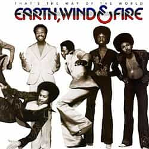

That’s the Way of the World
~ Earth, Wind & Fire ~
“That's the Way of the World is the sixth studio album by American band Earth, Wind & Fire, released on March 3, 1975, by Columbia Records. This was also the soundtrack for a 1975 motion picture of the same name.[4][5] The album rose to No. 1 on both the Billboard 200 and Top Soul Albums charts.” – Wikipedia. I also bought this vinyl at Rough Trade in New York City – an original copy from 1975!